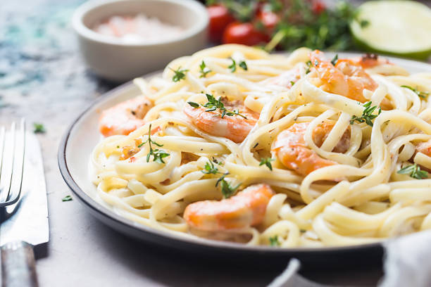

Shrimp alfredo pasta

Description
The rich, creamy texture of the alfredo sauce with the combination of the tender shrimps is a simple yet delicious dish. The flavour of the sauce is a tangy taste from the Parmesan cheese along with the mild combination of the buttery, salty, and sweet shrimps that are in the dish.
Ingredients
- 1 (16 ounce) jar Alfredo-style pasta sauce
- 1 (16 ounce) package angel hair pasta
- 2 pounds fresh shrimp, peeled and deveined
- 1 cup butter, melted
- 1/2 small green bell pepper, diced
- 1/2 small red onion, finely chopped
- 1 teaspoon garlic powder
- 1/2 teaspoon ground cumin
Steps
- In a saucepan over low-temperature, heat the Alfredo sauce. Bring a large pot of lightly salted water to a boil.
- Add pasta and cook for 8 minutes or until al dente; drain.
- Boil shrimp in a large pot of water until they turn orange. Then place in bowl with melted butter. Let shrimp marinate for 15 to 30 minutes; remove.
- In a large skillet over medium heat, saute the green pepper and onion in a small amount of oil.
- Mix together the cooked pasta, shrimp, pepper-onion mixture and Alfredo sauce. Season with garlic powder and cumin.